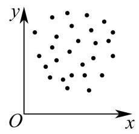
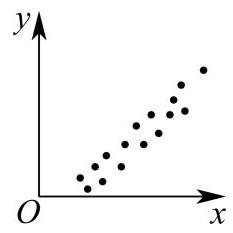
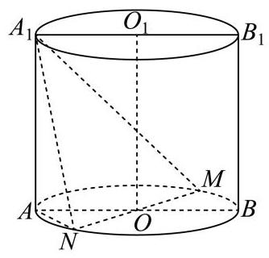

填空题
按本区原卷题号顺序排列。
闵行 · 第1题 ★☆☆☆☆ · 教师预估
已知集合 A={1,2,3,4},B={3,4,5,6} ，则 A∩B= ___.
闵行 · 第2题 ★☆☆☆☆ · 教师预估
设 x∈R ,不等式 x2−4x<0 的解集是___.
闵行 · 第3题 ★☆☆☆☆ · 教师预估
已知球的表面积为 4π ，则该球的体积为___.
闵行 · 第4题 ★☆☆☆☆ · 教师预估
已知 f(x)=(m−1)xa ,若 y=f(x) 是幂函数，且 f(3)=27 ，则 f(m)= ___.
闵行 · 第5题 ★★☆☆☆ · 教师预估
已知事件 A 发生的概率 P(A)=0.2 ，事件 B 发生的概率 P(B)=0.5 ，若事件 A 与 B 独立，则 P(A∩Bˉ)= ___.
闵行 · 第6题 ★★☆☆☆ · 教师预估
若 (2x−1)10=a0+a1x+a2x2+⋯+a10x10 ，则 a1+a2+⋯+a10= ___.
闵行 · 第7题 ★☆☆☆☆ · 教师预估
已知 z∈C ,若 z∣z∣2=1+i (其中 i 为虚数单位),则 z= ___.
闵行 · 第8题 ★★★☆☆ · 教师预估
在 ABC 中， AB=3,AC=5,BC=4 ，点 A 在以 B 、 C 为焦点的双曲线上，则该双曲线的两条渐近线的夹角大小为___.
闵行 · 第9题 ★★☆☆☆ · 教师预估
已知等比数列 {an} 的公比为 q ,若 i=1∑+∞a1qi−1=1 ,则 i=1∑3a1qi−1 的取值范围是___.
闵行 · 第10题 ★★★☆☆ · 教师预估
小闵同学打算将 “20260407” 中的 8 个数字 “ 2、0、2、6、0、4、0、7 ” 进行排列得到密码. 如果排列时要求两个 “2” 相邻且三个 “0” 不相邻，那么小闵可以设置的不同密码的个数为 ___.
闵行 · 第11题 ★★★★☆ · 教师预估
已知 a∈R ,若不等式 (lnx−1)(lnx−ax)>0 的解集中有且仅有两个整数，则 a 的最小值为___.
闵行 · 第12题 ★★★★☆ · 教师预估
定义:平面内图形 Γ 上的所有点在直线 l 上的射影所组成的图形称为 Γ 在 l 上的射影. 若存在边长为 m 的正三角形在正方形的四条边所在直线上的射影长度之和为 4,则 m 的取值范围为___.
选择题
按本区原卷题号顺序排列。
闵行 · 第13题 ★☆☆☆☆ · 教师预估
以下是由变量 x 与 y 所绘制的散点图,则它们的线性相关程度较高且正相关的是 ( )
A.

B. 
C. 
D.

闵行 · 第14题 ★★☆☆☆ · 教师预估
已知定义在 R 上的偶函数 y=f(x) 在 [0,+∞) 上是严格减函数,若 f(x−1)>f(1) , 则 x 的取值范围为( )
A. (0,2)
B. (−2,2)
C. (−2,0)
D. (−1,1)
闵行 · 第15题 ★★★☆☆ · 教师预估
本题资料或解析有待核事项，预览不可作为已审定成品。
若平面直角坐标系 xOy 中的点 P 到 x 轴与 y 轴的距离之和为 1,现有以下两个命题:
①存在点 P 到 x 轴与 y 轴的距离之差为 1 ；
②存在点 P 到 x 轴与 y 轴的距离之积为 1 .
则以下选项正确的是 ( )
A. ①不正确，②不正确
B. ①正确，②正确
C. ①正确，②不正确
D. ①不正确，②正确
闵行 · 第16题 ★★★★☆ · 教师预估
已知平面上 13 个向量 a1⋅a2 、 ⋯.a13 ，其中 a1=1 ，若对任意 n∈N,1≤n≤12 ，总有 an+1=2an 且 an⋅an+1=0 ，则 a1+a2+⋯+a13 的最小值为( )
A. 0
B. 3
C. 166
D. 632
解答题
按本区原卷题号顺序排列。
闵行 · 第17题 ★★★☆☆ · 教师预估
某学校举办“乐动体育”比赛活动，高三年级共有 50 名学生报名参加“小球类项目”， 其中参加乒乓球项目的有 28 人，参加羽毛球项目的有 22 人，赛前进行了一道比赛通用规则判断题测试，答对得 5 分，答错得 0 分，统计结果加下表:
根据上述数据，回答下列问题:
(1)求这 50 名学生的平均得分；
(2)从这 50 名学生中随机选取 2 人做裁判. 设随机变量 X 表示两名裁判的最高得分，求 E[X]
(3)是否有 95%的把握认为该题的测试成绩与比赛项目有关？(附:
χ2=(a+b)(c+d)(a+c)(b+d)n(ad−bc)2,n=a+b+c+d,P(χ2≥3.841)≈0.05)
闵行 · 第18题 ★★★☆☆ · 教师预估
本题资料或解析有待核事项，预览不可作为已审定成品。
如图,圆柱 OO1 的轴截面 ABB1A1 是边长为 4 的正方形, MN 为底面圆 O 的一条直径, 且 ∠BOM=3π .

(1)求异面直线 A1N 与 BB1 所成角的大小(用反三角表示)；
(2)求点 A 到平面 A1MN 的距离.
闵行 · 第19题 ★★★☆☆ · 教师预估
已知 m∈R,f(x)=msinx+(1−m)cosx .
(1) 当 m=21 时,解方程 f(x)=0 ;
( 2 )若函数 y=f(x) 在 (0,2π) 上有唯一的极值点，求 m 的取值范围，并判断这个极值点是极大值点还是极小值点.
闵行 · 第20题 ★★★★☆ · 教师预估
已知椭圆 Γ:a2x2+b2y2=1(a>b>0) 的焦距为 43 ，离心率为 23 ，过点 P(2,1) 的直线交椭圆于点 A 、 B .
(1)求Γ的方程；
(2)记 △OAP 的面积为S，求证: S≤22 ；
(3)求 ∣PA∣⋅∣PB∣ 的最大值与最小值，并写出取最大值与最小值时直线 AB 的方程.
闵行 · 第21题 ★★★★★ · 教师预估
对于定义在 R 上的函数 y=f(x) ,若存在实数对 (a,b) ,对于任意的实数 x ,都有 f(a−x)⋅f(a+x)=b 成立,则称函数 y=f(x) 为“ M 型函数”,点 (a,b) 称为 y=f(x) 的“ M ”点.
(1)判断函数 f(x)=x 与 g(x)=ex 是否为 “ M 型函数” (无须说明理由);
(2)是否存在 “ M 型函数” y=f(x) ，其图象上的所有点都是 y=f(x) 的 “ M 点”，如果存在,求出所有满足题意的 y=f(x) ,如果不存在,说明理由;
(3)设 f(x)>0,x∈R ，函数 y=f(x) 是 “ M 型函数”，且 y=f(x) 的图象是一条连续曲线. 已知 p<q ，点 (p,q) ， (q,p) 都是 y=f(x) 的“ M 点”. 证明:“对任意 x1 、 x2 ，当 p<x1<x2<q 时，均有 [f(p)−f(x1)]⋅[f(x1)−f(x2)]⋅[f(x2)−f(q)]>0 ”是“函数 y=f(x) 在 R 上为严格减函数”的充要条件.